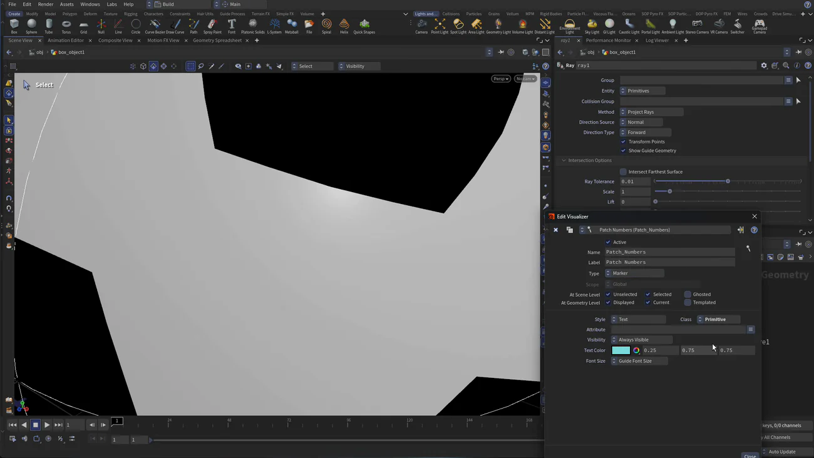
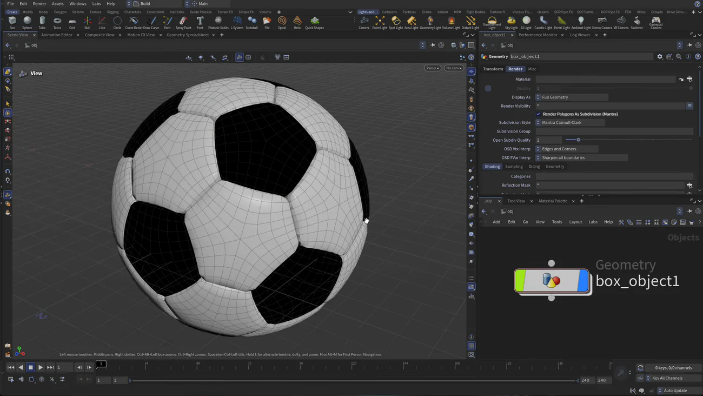

Houdini 22 入門 2 — Ray で真円にして For-Each でパッチごとに押し出す
出典: H22 Foundations | Model Render Animate 2 | The For-Each Node （SideFX 公式チュートリアル H22 Foundations: Model, Render, Animate の第2回 / Houdini 22 / 8:43 / 英語）。 このページは、上記の動画を見ながら自分用にまとめた日本語の学習メモです。SideFX 公式の翻訳ではありません。 前回は上流を差し替えてサッカーボールを作るでした。
この回で扱うこと
- すでに繋いだノードの順番を入れ替えることで、結果が変わること
Rayに完全な球を渡して、細分化で歪んだ形を真円に直すやり方- アトリビュートを自分で作る。
patchesに@primnumを入れると細分化しても元の面の番号が全部に行き渡ること - 作ったアトリビュートをビューポートに数字で表示して目で確かめる方法
- For-Each ループでパッチ1枚を単位として押し出す。これがこのコースの山場です
- ビューポートの見かけの細分化と、レンダリング時の細分化は別物だということ
前回作ったものは「面を1枚ずつ膨らませたボール」でした。 本物のサッカーボールは革のパッチ1枚が1つの塊として膨らんでいます。 その差を埋めるのがこの回です。
1. 細分化を先に持ってくる
まずノードの順番を変えます。動画では Y を使って Subdivide をチェーンから外し、
Platonic Solids のすぐ下に差し込み直しています。
これで結果がはっきり変わります。前回は「押し出したものを細分化」していましたが、 今回は「細分化したものを押し出す」順番になります。 同じノードの組み合わせでも、並び順が結果そのものだという分かりやすい例だと思います。
ただ、細分化した形をよく見ると完全な球にはなっていません。 サッカーボールは五角形と六角形が混ざっているので、面の形が違うぶん細分化の結果も少しずつずれます。
2. Ray で真円にする
ここで Ray を使います。Tab から Ray を置き、
別に Sphere（radius 1 のプリミティブ球）を作って Ray の第2入力に繋ぎます。
Ray は第1入力の点から法線方向にレイを飛ばして、第2入力の面まで点を移動させるノードです。 飛ばす先が完璧な球なので、歪みが取れてきれいに丸くなります。 バイパスして前後を見比べると、直線的に寝ていた部分が丸くなるのが分かります。
| ノード | 設定 |
|---|---|
sphere1 | radius 1。ray1 の第2入力へ繋ぎます |
ray1 | Method: Project Rays / Entity: Primitives / Direction Source: Normal / Direction Type: Forward / Transform Points オン |
プリミティブ球はただの完全な球なので、こういう「基準の形」として使うのに向いています。
3. patches アトリビュートを作る
次に Poly Extrude をいったん Connected Components に戻します。 前回 Individual Elements にしたのは面を1枚ずつ扱うためでしたが、 これから作るのは「パッチという塊」なので、いま個別にされていると邪魔になります。
そのうえで Tab から Attribute Create を、
Platonic Solids と Subdivide のあいだに差し込みます。
| パラメータ | 値 | なぜ |
|---|---|---|
| Name | patches | あとで For-Each に渡す名前です |
| Class | Primitive | 面につける情報なので点ではありません。ここを既定のままにすると後の工程が噛み合いません |
| Value | @primnum | その面自身の番号を、そのまま値として書き込みます |
大事なのは差し込む位置です。細分化より前に置くので、 このとき番号を振られるのは元の32面です。そのあと Subdivide が面を割っていくと、 割られた子の面すべてが親の番号を引き継ぎます。
ジオメトリスプレッドシートで見ると、Subdivide の前は 32 プリミティブ、 後は 720 プリミティブになっています。720 個それぞれに、 元がどのパッチだったかの番号が入っている状態です。これがこの回の仕掛けの全部です。
4. 目で確かめる — マーカーで番号を出す
数字がちゃんと行き渡っているかは、ビューポートに表示させて確かめられます。 シーンビューの表示オプションから Marker のビジュアライザを追加します。

| 項目 | 値 |
|---|---|
| Name / Label | Patch_Numbers / Patch Numbers |
| Type | Marker |
| Style | Text |
| Class | Primitive |
| Attribute | patches |
表示してみると、同じパッチの中の細かい面が全部同じ番号になっていて、 隣のパッチでは番号が変わります。狙い通りです。 アトリビュートは数字なので想像しにくいのですが、こうして画面に出してしまうのが確実だと思います。
5. For-Each でパッチ単位に押し出す
ここが本題です。Tab から For-Each Named Primitive を置くと、
foreach_begin と foreach_end の2つが対で作られます。
そのあいだに Poly Extrude を移動させます。
この状態ではまだ何も変わりません。foreach_end の
Piece Attribute に patches と入れて、はじめてループが仕事を始めます。
| ノード | パラメータ | 値 |
|---|---|---|
foreach_endblock_end |
attrib — Piece Attribute |
patches。同じ値を持つプリミティブが「1ピース」として扱われます |
polyextrude1 | Distance | 0.1 |
polyextrude1 | Inset | -0.02（マイナス方向です） |
ループは patches の値ごとにジオメトリを切り出して、1つずつ押し出して、最後に全部を合わせます。
だからパッチ1枚がひとかたまりとして膨らみます。
中に何十枚の面が入っていても関係ありません。
Inset をマイナスにすると押し出しの先が広がるので、パッチの縁がふくらんで革らしい感じになります。
6. Fuse して、もう一度細分化する
ループはピースごとに処理して結果を合わせるので、
隣り合うパッチの境目で点が二重になります。そこで Fuse を足して溶接します。
そのすぐ後に Subdivide をもう1つ（Depth 1）足すと、革のボールらしくなってきます。 1つ目の Subdivide が「パッチを分割するため」、2つ目が「仕上げを滑らかにするため」で、役割が違います。
7. 見かけの細分化と、レンダリング時の細分化
もっと滑らかに見たいときは Shift + +（戻すのは Shift + -）が使えます。
これはジオメトリを増やしているのではなく、オブジェクトレベルの表示設定を切り替えているだけです。

レンダリングのときは、オブジェクトレベルの Render タブにある Render Polygons As Subdivision をオンにしておくと結果がきれいになります。 表示のほうを戻していても、このチェックはレンダリングに効きます。 ここを混同しやすいので、見かけと出力は別の設定と覚えておくとよさそうです。
この回のまとめ
- ノードは順番そのものが結果です。Subdivide を押し出しの前に動かすだけで作るものが変わります
Rayの第2入力に完全な球を渡すと、細分化で出た歪みを真円に直せます- Attribute Create を細分化より前に置くのが仕掛けの核です。32 面に振った番号が、割られた 720 面すべてに引き継がれます
- アトリビュートは Marker ビジュアライザ（Type: Marker / Style: Text / Class: Primitive）で画面に出して確認できます
- For-Each は
foreach_endの Piece Attribute を入れるまで何もしません。ここが空のまま「動かない」と悩みがちなところです - ループの後は点が二重になるので
Fuseが要ります Shift++の表示と、Render タブの Render Polygons As Subdivision は別物です
次の第3回は UV です。Houdini のジオメトリには UV が入っていないので自分で作ります。
このとき patches がもう一度活きて、暗いパッチと明るいパッチを UV 空間で分ける役に立ちます。